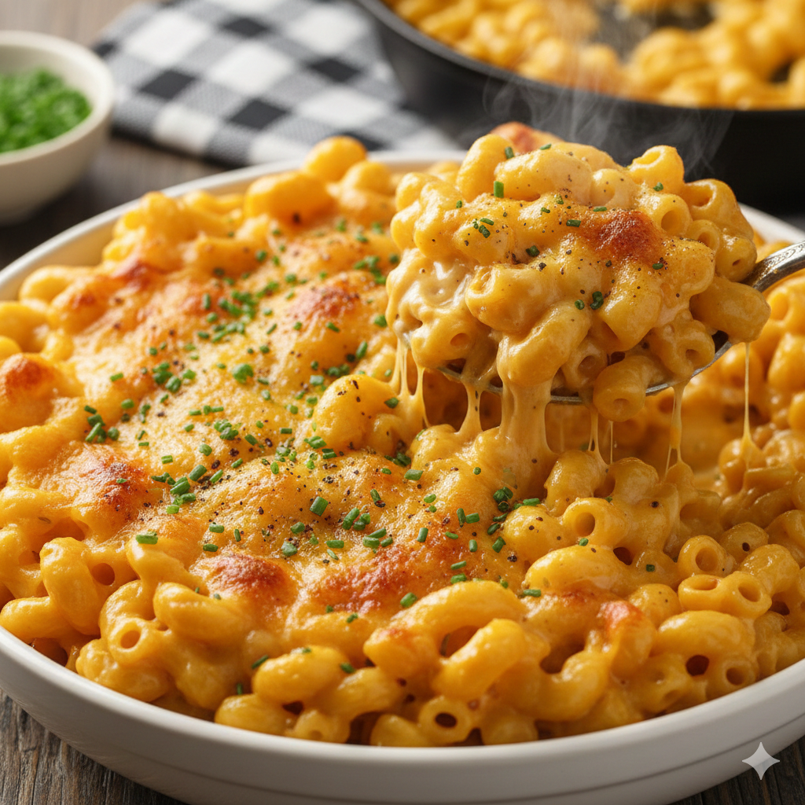

3 Ingredient Mac and Cheese
Home

Description
This creamy, gooey macaroni and cheese recipe, inspired by cacio e pepe, boasts only three staple ingredients and
comes together in about 10 minutes, making it quicker and simpler than boxed versions. The technique involves
cooking pasta in a small amount of water to create a starchy base that emulsifies with cheddar, resulting in a
perfectly smooth and cheesy sauce, after some initial troubleshooting to prevent greasiness.
Ingredients
- 6 ounces (170 g) elbow macaroni
- Salt (to taste)
- 6 ounces (180 ml) evaporated milk
- 6 ounces (170 g) grated mild or medium cheddar cheese, or any good melting cheese, such as Fontina, Gruyère,
or Jack
Cooking Instructions
- Place macaroni in a medium saucepan, add just enough cold water to cover, and a pinch of salt.
- Bring to a boil over high heat, stirring frequently.
- Continue to cook, stirring, until water is almost absorbed and macaroni is just shy of al dente (about 6
minutes).
- Immediately add evaporated milk and bring to a boil.
- Add cheese, reduce heat to low, and cook, stirring continuously, until cheese is melted and a creamy sauce
forms (about 2 minutes).
- Season with more salt to taste and serve immediately.